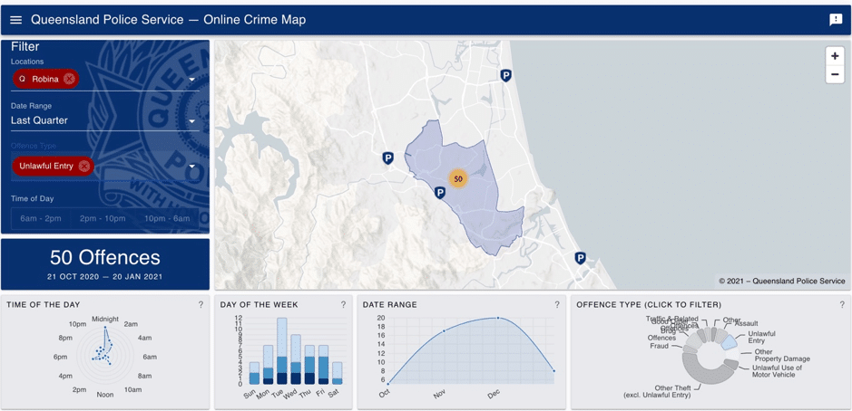

On this page
AT A GLANCE
Out of all of the suburbs in Queensland, the Gold Coast has been named the second-worst region for home invasions.
Out of all of the suburbs in Queensland, the Gold Coast has been named the second-worst region for home invasions. The suburbs at the top of the list are Ormeau, Upper Coomera and Robina. In 2020, more people were working from home due to isolation measures, but as people enter the workforce again and at home less, there’s a risk people will become complacent with their home security measures.
If you want to check how your Gold Coast suburb is measuring up in terms of unlawful entries, you can go to an
interactive map and see exactly how many break-ins have occurred in your suburb and at what time of night and what day of the week. For example, in the last quarter, Robina has experienced 50 offences, with the majority happening mid-week and near midnight.

Thieves are opportunistic and will break into a home that is easy to access where they can get in and out quickly and without detection.
While statistically, year-on-year, Australia has seen a reduction in home invasions, the basis has been founded mainly because more people are installing home security measures.
In a
survey that was conducted by police detainees about what mistakes residents made that made their homes venerable to break-ins, the results were:
- Doors/windows left open – 70%
- Minimal security – 40%
- Easy to enter backyards – 25%
- Detectable keys – 12%
- False security systems – 8%
- Environmental design – 5%
- Skylights – 2%
When the detainees were asked what would stop them or deter them from attempting to break into a property, the answers were as follows:
- A barking dog – 61.4%
- A working alarm system – 49.1%
- Sensor lights on the outside of the property – 22.8%
- Lights on inside of the house – 19.3%
- Grilled windows/doors – 19%
- Visibility of the property from road – 14%
- Gates – 12.3%
The most common way thieves break into homes is from unlocked doors (40%), breaking a window or door (35%), and picking or breaking a lock (20%).
The statistics reflect that most home invasions happen because people do not secure their properties with adequate lock and security measures.
Here are some steps and tips to secure your home:
Outside your home
- Have your home well-lit at night to discourage would-be criminals and have floodlights and motion-detecting lights around areas of your home that are low-lit.
- Put up alarm signs and stickers on the exterior of your home. Even if you don’t have an alarm set up, saying you do, tells the outside world your house is potentially secured and will act as a deterrent.
- One step better than actually pretending to have an alarm is having one. Invest in security cameras with motion sensors. There is an excellent range of wireless security cameras that can connect to the internet that can be operated by your smartphone or computer.
Windows and doors
- Always lock windows even from the second floor and ensure secondary locking devices.
- Think about updating the locks on doors and windows.
- Enclose options like private patio screens, glass patio enclosures, or mesh patio safety screens.
- Check and secure any skylights or roof-access with upgraded hardware.
Home Interior
- Ensure your alarm is monitored and will continue to work in the event you lose power in a storm, or it happens to be neutralised.
- Make a plan with your family and talk about what could happen in the event of a home invasion in the same way you would have a fire plan.
- Both children and adults should know the closest escape routes in a home and what to do once outside the home.
- Owning a dog can be a deterrent and bring unwanted attention when they bark, which could be the difference between a burglar choosing your property or one down the street.
- If you own a safe or filing cabinets that contain essential material, ensure they are bolted down and lock expensive equipment like bikes, jet skis, trailers, and camper vans with locks.
At
SPL Security, we have an extensive range of smart security options, Locking solutions, designer doorways and safes to suit any residential or commercial property.
Contact us today so we can safeguard the security of your property.